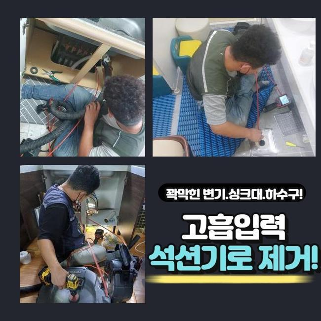
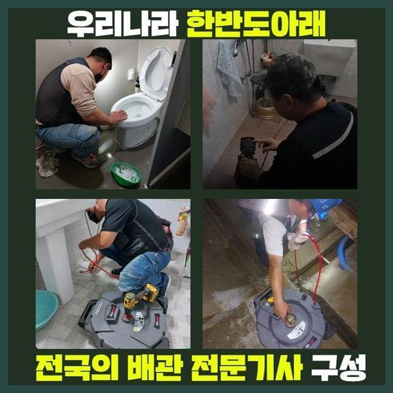
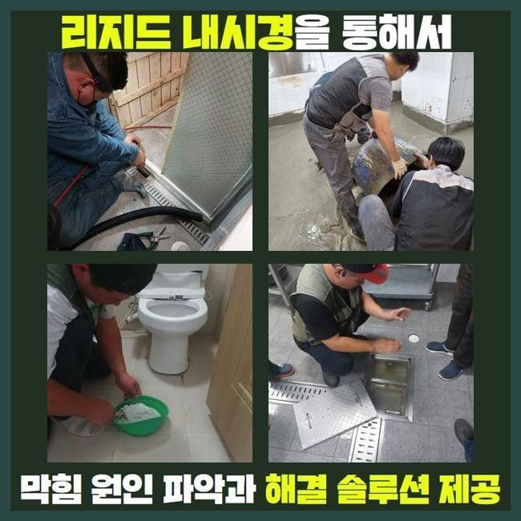
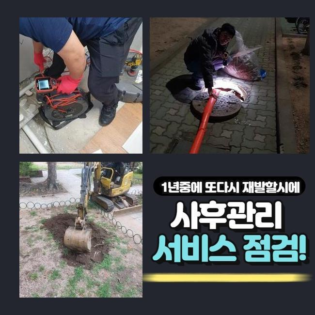
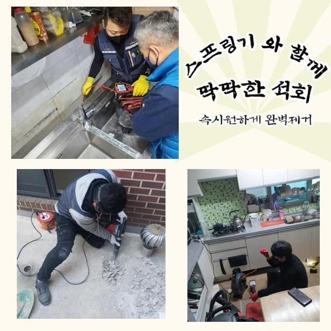
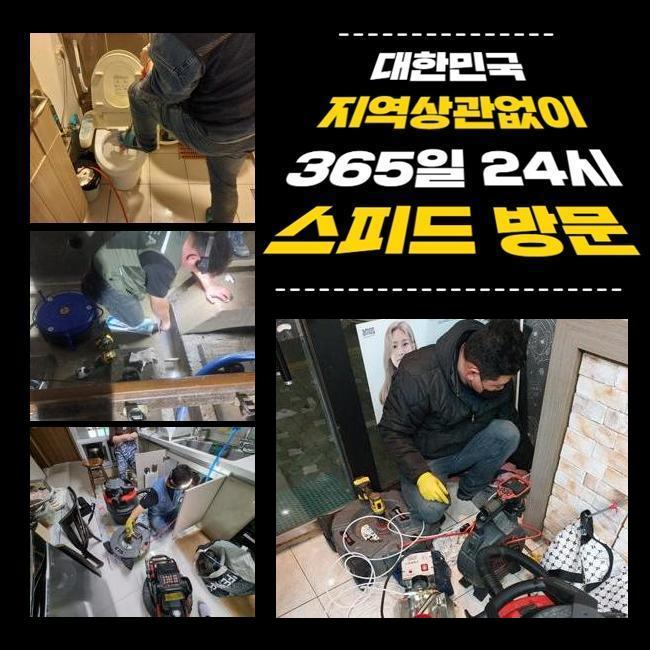

🏠 수원 남향동대변기역류 우만동 배수구뚫기 설비
수원 우만동 싱크대막힘 전문 시공 후기

📋 작업 개요
- 위치: 수원 우만동, 우만동, 수원
- 서비스 유형: 싱크대막힘, 변기막힘, 하수구막힘, 배관막힘, 누수수리, 역류해결, 뚫는업체, 배관청소, 고압세척
- 작업 일시: 2025. 3. 24. 18:40
- 업체명: 하수구수사대 (010-5615-2118)
🔍 문제 상황
수원 남향동대변기역류 우만동 배수구뚫기 설비
어느장소든 배관이 막히면 조속하게 방문해서 해결해주는 업체인데요
많은분들께서 혼자서 직접 처리하려고 할때 배수구 클리너나 락스같은 것들을 사용하실겁니다
클리너를 활용하면 하수구내부에 퇴적될 오염물질들을 소거하는데 유용하긴 합니다
클리너제품을 사용하더라도 제거해내기가 곤란한 이물이 있답니다
일반적으로 여러의 이물질들이 덩어리상태로 단단히 굳어버리는 석회나 고착물질이죠
석회물질의 경우에는 내시경카메라로 이물의 지점과 형태를 정확히 파악하고 알맞은 방법대로 제거해내는 과정들이 요구됩니다
그러면 전문업체는 무슨 방식으로 굳어버린 오염물을 없애는지 며칠전 방문한 작업내용으로 알려드리도록 해볼게요
이번시간에 알아볼 현장장소는 가정내에서 발생된 막힘문제죠
욕실바닥부분 배수상태가 느려졌다고 하시면서 연락주셨어요
저희들은 고객분께서 전달주신 정보와 문제의 배수관을 살피면서 원인에대해 알아보았어요
고객분은 이틀전부터 배수상태가 점점 더뎌지기 시작했으며 이상한 악취도 동반되었다고 알려주셨죠

🔎 원인 분석
💡 전문가 진단: 정밀 진단 장비를 사용하여 슬러지의 고착 여부를 판명하고 타격/세척 작업을 실시했습니다.
셀프로 뚫기위해 시중에서 구매한 용액을 통해 세척하셨다고 하셨는데요
그렇지만 냄새의경우 제거되지 않았으며 배수상태도 원활하게 돌아오지 않으셨죠
시간이흐르며 되려 배수상태는 꽉 막혀버렸고 결국엔 저희들에게 요청해주신 것입니다
의뢰자분이 전달해주신 증상들과 하수구를 살피며 원인 찾기에 돌입했어요
악취문제가 발현된 하수구막힘은 막힌이유에 대하여 확실하게 조사하는것이 중요한데요
먼저 석션장비를 활용하여 넘친물을 빨아들인뒤 하수구트랩 분리를 시작했어요
하수구주변을 확인해보았는데 육안만으로 상황을 알아내기가 불가했어요
배관내부를 들여다볼수있는 배관내시경을 투입했어요
내시경도구가 하수구안에 투입하자마자 군데군데 오염물질이 화면에 나타났어요
확인해봤지만 막히는문제를 일으키게할 정도는 아닌것으로 확인되어 계속하여 배관안으로 내시경을 투입해보니 막힌원인에 대해 알아낼수있었죠
머리칼과 샤워용품 찌꺼기들이 오랜시간 퇴적된 석회덩어리 이물이었어요
하수구안에서 퇴적된 잔해물은 하수구통로를 막아버리고 통로속에 오염물질이 썩게되면서 악취현상도 일어난겁니다

🔧 작업 과정
고착물질의 경우엔 여러가지의 이물이 뭉치며 굳은형태로 만들어지게 되는것인데 막힘문제가 발생하는 확고한 원인인데요
날이가면서 단단해질수 있을 뿐 아니라 제거하는 방법들도 굳은상태마다 달라질수있죠
내시경을 통해 확인한 오염물은 단단한 정도와 크기가 심해보이지 않았기에 흡입기로 제거해볼수 있었습니다
석션기의 경우 배관내에 쌓여진 잔여물을 빨아들여주는 기기라고 설명할수있어요
하수구손상이 발현되지 않도록 제거하고자 카메라를 같이 투입하여 작업해 주었죠
배관안을 살펴보면서 이물질이 보이는 통로쪽에 석션기로 빨아들여 오염물을 없앴어요
하수구 끝까지 하수도촬영기로 살펴보며 달라붙어있는 오염물과 슬러지들을 청소했죠
오염물제거를 꼼꼼히 착수한후 하수구카메라로 다시한번 배관속을 체크하는걸 반복하여 진행했답니다
반복했더니 배관안속에 남겨져있었던 찌든때나 잔해물질이 완벽히 청소된것이 내시경기로 확인이 가능했죠
이물질들을 제거해보니 심했던 악취문제도 사라지는걸 확인했는데요
마무리 과정으로 배수상태를 점검하고자 물을틀은후 배수구에 흘려보내면서 배수상황을 테스트했어요
쌓여있던 잔해물들을 제거했기에 문제없이 흐르는것을 확인했죠
테스트과정을 마친후에 철수했어요
재차 말씀드리지만 전문가를 통하여 처리하는 과정이 필요한이유를 설명드리자면 막힘문제가 일어난 이유에대해 확실히 검사해야 뚫을수있겠죠
굳은형태로 이루어진 오염물은 클리너같은 제품을 통하여 소거시키기 어렵죠
혹시라도 방치하실경우 누수문제나 역류현상으로 이어지기도 한답니다
돌처럼 슬러지들이 고착화 되었으면 다른장비들이 필요할수있죠
샤프트기라는 장비로 고착물을 분쇄시킬수 있으므로 막혀있는 상황마다 활용되는 도구들이 다를수가 있습니다
배관시스템이 무너졌을때 주위에서 시도하는 셀프시도로 해결이 가능할거라고 생각하십니다


✅ 작업 완료
이런 방법들을 시도하더라도 물내려가는게 확실하게 내려가지않고 악취현상까지 배수로에서 동반되는경우 업체도움을 받아야 한답니다
싱크대나 샤워실처럼 물사용이 많은곳은 간헐적으로 점검하여 막힘문제들을 예방해주시는게 좋으니 참고해주세요!
혼자서 처리할수있는 과정을 간략히 말씀드리면 배수구망이나 배관트랩을 설치하면 악취현상과 막힘문제를 예방할수있죠
아파트나 빌라처럼 여러세대가 함께사는 시설이라면 빠르게 처리해드릴수 있사오니 연락주시면 1시간내로 방문할게요
수리계획에 대해서 투명히 보여드리니 고객님이 편하신때에 문의주신다면 상세하게 응대를 진행해드리도록 하겠습니다!




⚠️ 베란다 누수 및 방수 관리 방법
- ✅ 비가 많이 올 때 창틀 주변이나 아래층 천장에 얼룩이 생기는지 정기적으로 확인해 보세요.
- ✅ 우수관 주변 실리콘 마감이 들뜨거나 깨진 틈새가 있는지 손상 여부를 수시로 체크하세요.
- ✅ 베란다 바닥 타일의 줄눈(메지)이 소실되면 그 틈으로 물이 침투하여 누수가 유발됩니다.
- ✅ 누수 의심 증상 발견 시 방치하면 아래층 손실이 커지므로 즉시 전문가의 진단을 받으십시오.
💡 핵심 정리
- 확실한 장비 작업(내시경 점검 및 샤프트 스케일링)으로 원인을 뿌리 뽑습니다.
- 작업 후 1년 이내에 동일한 부위 재발 시 100% 무상 A/S 서비스를 보장합니다.
- 서울 · 경기 · 인천 전 지역에 24시간 언제든 긴급 출동할 수 있도록 항시 대기 중입니다.
❓ 자주 묻는 질문 (FAQ)
🚨 수원 우만동 싱크대막힘 문제로 고민이신가요?
정확한 원인 진단과 확실한 시공으로 재발 없는 해결을 약속드립니다.
24시간 긴급 출동 | 서울 · 경기 · 인천 전지역 | 1년 내 재발 시 무상 A/S